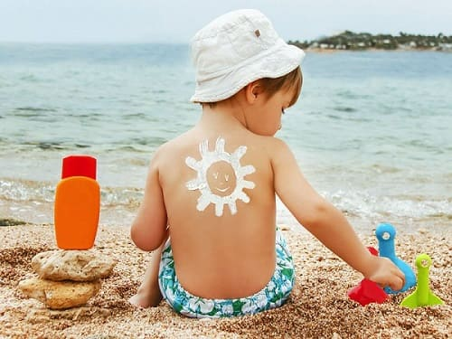

СОЛНЕЧНЫЕ ОЖОГИ

Даже если родители и дети придерживаются наших советов по защите от солнца, в детстве каждый все равно может один-три раза обгореть. Вот что вы можете сделать в такой ситуации:
Если ожог такой сильный, что образовались волдыри: это ожог второй степени.
Если ожог красный и болезненный, но волдырей еще нет:
- Приложите холодный компресс, например, тряпку, смоченную в холодной воде. Если солнечный ожог на туловище, пусть ребенок носит майку, смоченную холодной водой.
- Нанесите гель с алоэ вера, чтобы успокоить и смягчить кожу; это может предотвратить шелушение.
- Давайте ребенку ибупрофен два раза в день в течение 2—3 дней, чтобы облегчить боль и уменьшить красноту и отек.
- Хорошо увлажняйте ребенка. Сожженная, шелушащаяся кожа высыхает. Давайте ребенку по меньшей мере 30 граммов жидкости на 350 граммов веса.
Здоровье ребенка от докторов Сирс / Сирс У. и др.